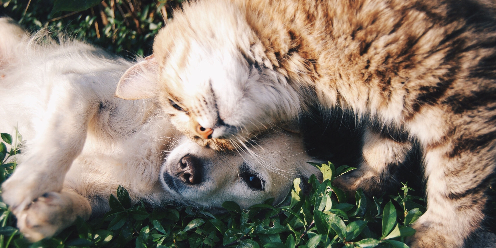

Mi Mejor Amigo
" Cuando crees que tu vida no puede ser mejor, llega un amigo que se adueña tanto de tu corazon como de tu casa completa."
Había una vez un hombre llamado Daniel que estaba pasando por una época difícil en su vida. Había perdido su trabajo y se encontraba en una profunda depresión. Se sentía solo y sin rumbo en la vida, hasta que un día, algo cambió.
Un perro callejero apareció en su puerta y comenzó a ladrar. Daniel no estaba seguro de qué hacer, pero decidió acercarse y darle de comer. El perro se sintió agradecido y comenzó a seguir a Daniel a todas partes.
Al principio, Daniel se resistía a la idea de tener una mascota en su casa, pero poco a poco el perro empezó a ganarse su corazón. Se dieron cuenta de que eran el uno para el otro y rápidamente se convirtieron en los mejores amigos.